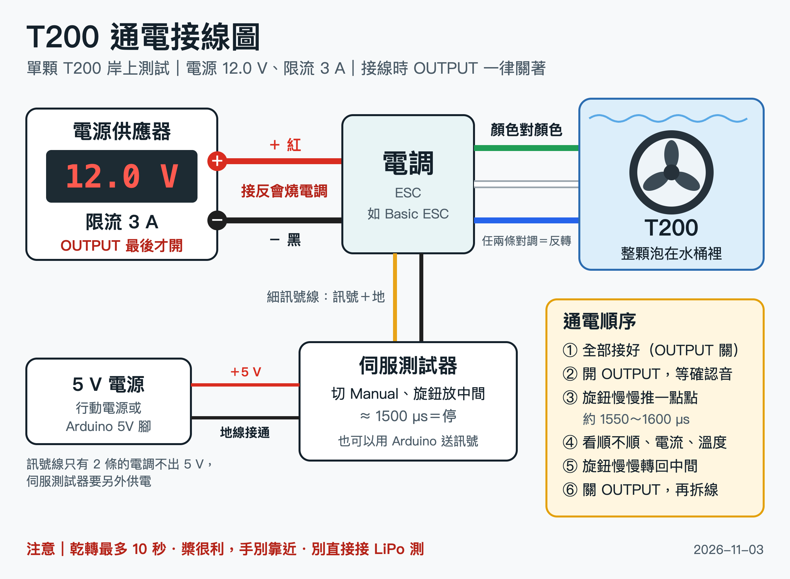

水下推進器・岸上通電測試・2026-11-03 版
單顆 Blue Robotics T200 接電調、用直流電源供應器在岸上測：轉不轉、順不順、電流正不正常。
這份 SOP 分成 4 則，可以直接貼到 Discord：按每段的「複製成 Discord 貼文」，貼上後標題、粗體、灰色小字會自動套用。貼第 1 則時記得附上接線圖。
看外觀 → 手轉＋短接 → 電表量三組電阻。三關都過再通電。
體檢表（可印）：https://dandycheng110.github.io/notes/t200-checksheet-1029/

# 🔌 T200 推進器通電 SOP -# 1/4｜單顆 T200 接電調、用電源供應器在岸上測：轉不轉、順不順、電流正不正常｜2026-11-03 版 ## 先過不通電的 3 關 看外觀 → 手轉＋短接 → 電表量三組電阻。三關都過再通電。 -# 體檢表（可印）：<https://dandycheng110.github.io/notes/t200-checksheet-1029/> ## 要準備 - T200 ×1、電調 ×1（Blue Robotics Basic ESC；無人機電調也能用，見 3/4） - 直流電源供應器（要能限流） - 伺服測試器或 Arduino：送油門訊號 - 5 V 電源：行動電源（接 USB 轉杜邦線）或 Arduino 的 5V 腳。電調細訊號線只有 2 條的不出 5 V，伺服測試器要另外供電 - 水桶＋夾子：推進器要整顆泡進水裡 - 三用電表：確認電源真的輸出 12 V ## 接線（照附圖，全程電源 OUTPUT 關著） - 電源 ＋（紅）→ 電調紅線；電源 －（黑）→ 電調黑線。⚠️ **正負接反會燒電調** - 電調三條粗的馬達線 → T200 的綠、白、藍，顏色對顏色。任兩條對調＝反轉 - 電調細的訊號線 → 伺服測試器或 Arduino：訊號對訊號、地對地。通常白或黃是訊號、黑或棕是地，以電調上的標示為準 - 伺服測試器另外接 5 V 時，地線要互相接通 - 馬達線別用長鱷魚夾：接觸不良會轉得卡卡的，看起來像推進器壞了
看得到電流設定值的（關著 OUTPUT 時螢幕會顯示，或有 I-SET、LIMIT 鍵）：直接把 CURRENT 轉到 3.0 A
看不到的：CURRENT 先轉到最小 → 用粗線短接輸出 ＋－ → 開 OUTPUT → CURRENT 慢慢轉到 3.0 A → 關 OUTPUT → 拆掉短接線
⚠️ 少數「折返式（foldback）」限流的電源不能短接，先查說明書
⚠️ 伺服測試器不要用 Auto 模式：它會自己來回掃到全油門
-# T200 通電 SOP 2/4 ## 一、設定電源供應器（先不接電調） 1. OUTPUT 關著，打開電源開關 2. 雙通道機型：模式選 **INDEP（獨立）**。選到 SERIES（串聯）會變兩倍電壓 3. 電壓轉到 **12.0 V**（T200 可用 7～20 V）。指針表看不準，用三用電表量輸出端 4. 限流設 **3 A**，看你的機型： **看得到電流設定值的**（關著 OUTPUT 時螢幕會顯示，或有 I-SET、LIMIT 鍵）：直接把 CURRENT 轉到 3.0 A **看不到的**：CURRENT 先轉到最小 → 用粗線短接輸出 ＋－ → 開 OUTPUT → CURRENT 慢慢轉到 3.0 A → 關 OUTPUT → 拆掉短接線 -# ⚠️ 少數「折返式（foldback）」限流的電源不能短接，先查說明書 ## 二、通電測試（照順序） 1. 推進器整顆泡進水桶，夾牢在桶邊 2. 伺服測試器接上 5 V、切 **Manual（手動）**，旋鈕轉到正中間（約 1500 µs＝停） 3. 開 OUTPUT。電調會叫幾聲；保持 1500 µs 幾秒，聽到確認音才會動 4. 旋鈕**慢慢**推一點點（約 1550～1600 µs），看三件事：順不順、電流、溫度 5. 結束：旋鈕**慢慢**轉回中間 → 關 OUTPUT → 再拆線 - **順不順**：一頓一頓，多半是馬達線有一條沒接好 - **電流**：看電源的顯示。每顆用同一個油門，好的幾顆會很接近；特別高的就是摩擦大 - **溫度**：測完摸摸馬達，特別燙的標起來 ⚠️ **伺服測試器不要用 Auto 模式**：它會自己來回掃到全油門
開 OUTPUT 前，旋鈕要轉到最小（不是中間）才會解鎖，而且只會往一個方向轉。測轉不轉夠用了
🟢 能用：四關都過
🟡 清再測：只有手轉沙沙、卡卡 → 清水沖、邊沖邊轉再測。要拆開清，先問器材負責人
🔴 先別用：電阻 OL、短接某組沒感覺、通電一頓一頓、電流特別高又燙、線皮破到見銅
來源：Blue Robotics T200 規格頁、Thruster User Guide、原廠論壇。限流 3 A、油門 1550～1600 µs 是實務建議，不是原廠規格
-# T200 通電 SOP 3/4 ## 卡關怎麼辦 - **伺服測試器不亮**：電調細訊號線只有 2 條的不出 5 V → 另外給 5 V，地線要接通 - **一直重播開機音**：電壓被限流拉低，或訊號斷斷續續 → 限流往上調一點，檢查訊號線 - **沒有確認音、推了不動**：中間值沒對準 → 伺服測試器切 Neutral（固定 1500 µs）試試，切回 Manual 前旋鈕先轉回中間；Arduino 改送 1495 或 1505 - **推油門時 CC 燈亮**：電流撞到限流，電壓會掉 → 先收油門，查有沒有卡東西 - **電源過壓保護（OVP）跳掉**：馬達減速時電調把電灌回電源 → 油門慢慢收，不要從正轉直接打到反轉 - **懷疑推進器壞了**：跟好的那顆對調電調再測，分出是電調還是推進器的問題 ## 用無人機電調 開 OUTPUT 前，旋鈕要轉到**最小**（不是中間）才會解鎖，而且只會往一個方向轉。測轉不轉夠用了 ## 安全紅線 - 乾轉最多 10 秒，原廠人員建議只點 1～2 秒（軸承靠水潤滑） - 別直接接 LiPo 測：沒有限流，12 V 全油門會吃到 15～17 A - 槳很利：通電前夾牢，手指、頭髮、電線都遠離 - 接線、拆線一律先關 OUTPUT - 正負接反會燒電調：開 OUTPUT 前再看一次 ## 測完分三堆 🟢 **能用**：四關都過 🟡 **清再測**：只有手轉沙沙、卡卡 → 清水沖、邊沖邊轉再測。要拆開清，先問器材負責人 🔴 **先別用**：電阻 OL、短接某組沒感覺、通電一頓一頓、電流特別高又燙、線皮破到見銅 -# 來源：Blue Robotics T200 規格頁、Thruster User Guide、原廠論壇。限流 3 A、油門 1550～1600 µs 是實務建議，不是原廠規格
伺服測試器的旋鈕很難每次轉到同一格。Arduino 每顆都送一模一樣的訊號，比電流最準。
#include <Servo.h>
Servo esc;
void setup() {
esc.attach(9);
esc.writeMicroseconds(1500); // 停止：電調要先收到這個才會解鎖
delay(7000); // 等確認音
esc.writeMicroseconds(1600); // 小油門，這時看電流
delay(5000); // 轉 5 秒
esc.writeMicroseconds(1500); // 停
}
void loop() {}1600 可以改（1100～1900，1500 是停）。寫法照 Blue Robotics 官方範例「Basic ESC R3 Example Code for Arduino」
-# T200 通電 SOP 4/4（選用）
## 附錄：用 Arduino 送固定油門（Basic ESC）
伺服測試器的旋鈕很難每次轉到同一格。Arduino 每顆都送一模一樣的訊號，比電流最準。
- 訊號線接 D9、地線接 GND，Arduino 用 USB 供電
- **先開電源 OUTPUT，再插 USB 或按 RESET**。Arduino 先開機的話，電調會錯過開機訊號，推進器不會動
- 換下一顆：關 OUTPUT → 換推進器 → 開 OUTPUT → 按 RESET
```cpp
#include <Servo.h>
Servo esc;
void setup() {
esc.attach(9);
esc.writeMicroseconds(1500); // 停止：電調要先收到這個才會解鎖
delay(7000); // 等確認音
esc.writeMicroseconds(1600); // 小油門，這時看電流
delay(5000); // 轉 5 秒
esc.writeMicroseconds(1500); // 停
}
void loop() {}
```
-# 1600 可以改（1100～1900，1500 是停）。寫法照 Blue Robotics 官方範例「Basic ESC R3 Example Code for Arduino」
限流 3 A、油門 1550～1600 µs 是實務建議，不是原廠規格。